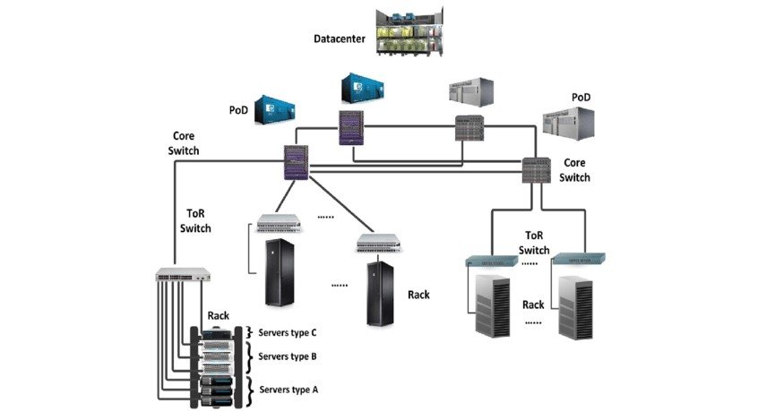

C’est quoi un Centre de données ?
Le centre de données est un emplacement où l'équipement informatique et réseau est utilisé pour collecter, traiter et stocker des données, ainsi que pour distribuer et permettre l'accès aux ressources.
L’installation des centres de données est composée d'ordinateurs en réseau, de systèmes de stockage et d'une infrastructure informatique que les compagnies, entreprises ou autres formes de clients pour assembler, traiter, stocker et diffuser de grandes quantités de données.
Une entreprise dépend généralement des applications, des services et des données contenues dans un centre de données, ce qui en fait un atout essentiel pour les opérations quotidiennes.
Architecture
L'architecture du centre de données est généralement créée lors de la phase de conception et de construction du centre de données.
L'architecture du centre de données spécifie où et comment le serveur, le réseau de stockage, les racks et les autres ressources du centre de données seront physiquement placés.
Il explique également comment ces ressources/dispositifs seront interconnectés et comment les flux de travail de sécurité physiques et logiques sont organisés.
En règle générale, l'architecture du centre de données consiste en ou intègre :
-Architecture réseau du centre de données
-Architecture informatique du centre de données
-Architecture de sécurité du centre de données
-Architecture physique du centre de données
- Architecture des informations du centre de données
Historique
Les origines des premiers data centers remontent aux années 1940 et à l’existence des premiers systèmes informatiques comme l’ENIAC (Electronic Numerical Integrator and Computer). Ces premières machines étaient complexes à entretenir et à exploiter et disposaient d’une multitude de câbles reliant tous les composants nécessaires. Elles étaient également utilisées par les militaires – ce qui signifie que des salles informatiques spécialisées avec des racks, des chemins de câbles, des mécanismes de refroidissement et des restrictions d’accès étaient nécessaires pour accueillir tout l’équipement et mettre en place les mesures de sécurité appropriées.